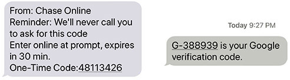
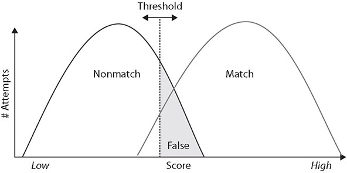
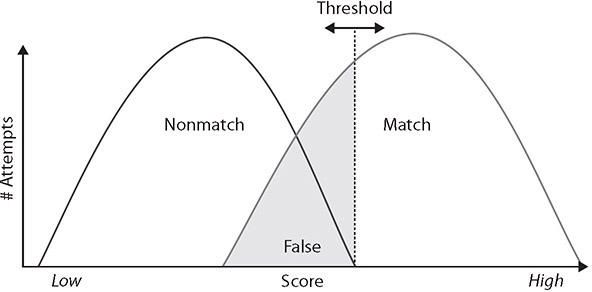
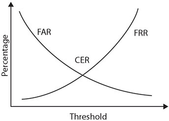

Table of Contents for
CompTIA Security+ All-in-One Exam Guide, Sixth Edition (Exam SY0-601)), 6th Edition
- Cover (01:09 mins)
- Title Page (01:09 mins)
- Copyright Page (03:27 mins)
- Dedication (01:09 mins)
- About the Authors (04:36 mins)
- Contents (19:33 mins)
- Preface (02:18 mins)
- Acknowledgments (01:09 mins)
- Introduction (12:39 mins)
-
Part I Threats, Attacks, and Vulnerabilities (01:09 mins)
- Chapter 1 Social Engineering Techniques (35:39 mins)
- Chapter 2 Type of Attack Indicators (37:57 mins)
- Chapter 3 Application Attack Indicators (33:21 mins)
- Chapter 4 Network Attack Indicators (39:06 mins)
- Chapter 5 Threat Actors, Vectors, and Intelligence Sources (44:51 mins)
- Chapter 6 Vulnerabilities (31:03 mins)
- Chapter 7 Security Assessments (23:00 mins)
- Chapter 8 Penetration Testing (25:18 mins)
-
Part II Architecture and Design (01:09 mins)
- Chapter 9 Enterprise Security Architecture (26:27 mins)
- Chapter 10 Virtualization and Cloud Security (25:18 mins)
- Chapter 11 Secure Application Development, Deployment, and Automation Concepts (27:36 mins)
- Chapter 12 Authentication and Authorization (33:21 mins)
- Chapter 13 Cybersecurity Resilience (39:06 mins)
- Chapter 14 Embedded and Specialized Systems (41:24 mins)
- Chapter 15 Physical Security Controls (49:27 mins)
- Chapter 16 Cryptographic Concepts (42:33 mins)
-
Part III Implementation (01:09 mins)
- Chapter 17 Secure Protocols (20:42 mins)
- Chapter 18 Host and Application Security (46:00 mins)
- Chapter 19 Secure Network Design (67:51 mins)
- Chapter 20 Wireless Security (25:18 mins)
- Chapter 21 Secure Mobile Solutions (43:42 mins)
- Chapter 22 Implementing Cloud Security (24:09 mins)
- Chapter 23 Identity and Account Management Controls (33:21 mins)
- Chapter 24 Implement Authentication and Authorization (37:57 mins)
- Chapter 25 Public Key Infrastructure (55:12 mins)
- Part IV Operations and Incident Response (01:09 mins)
- Part V Governance, Risk, and Compliance (01:09 mins)
- Part VI Appendixes and Glossary (01:09 mins)
- Glossary (65:33 mins)
- Index (67:51 mins)
CHAPTER 12
Authentication and Authorization
In this chapter, you will
• Learn how to identify and implement authentication methods, factors, and attributes
• Learn about authorization design concepts and requirements
One of the core tenets of computer security is the concept that all actions will be controlled via a system of approvals; for example, only authorized parties can perform the actions of accessing a resource, operating on a resource, and storing an item. Identity and access management systems are the mechanisms by which this is accomplished. This chapter examines the foundational elements behind authentication systems.
Certification Objective This chapter covers CompTIA Security+ exam objective 2.4: Summarize authentication and authorization design concepts.
Authentication Methods
Authentication is the process of verifying an identity previously established in a computer system. There are a variety of methods of performing this function, each with its advantages and disadvantages, as detailed in the following sections.
Directory Services
A directory is a data storage mechanism similar to a database, but it has several distinct differences designed to provide efficient data-retrieval services compared to standard database mechanisms. A directory is designed and optimized for reading data, offering very fast search and retrieval operations. The types of information stored in a directory tend to be descriptive attribute data. A directory offers a static view of data that can be changed without a complex update transaction. The data is hierarchically described in a treelike structure, and a network interface for reading is typical. Common uses of directories include e-mail address lists, domain server data, and resource maps of network resources. The Lightweight Directory Access Protocol (LDAP) is commonly used to handle user authentication and authorization and to control access to Active Directory (AD) objects.
To enable interoperability, X.500 was created as a standard for directory services. The primary method for accessing an X.500 directory is through the Directory Access Protocol (DAP), a heavyweight protocol that is difficult to implement completely, especially on PCs and more constrained platforms. This led to LDAP, which contains the most commonly used functionality. LDAP can interface with X.500 services and, most importantly, can be used over TCP with significantly less computing resources than a full X.500 implementation. LDAP offers all of the functionality most directories need and is easier and more economical to implement; hence, LDAP has become the Internet standard for directory services. LDAP standards are governed by two separate entities, depending on use: the International Telecommunication Union (ITU) governs the X.500 standard, and LDAP is governed for Internet use by the Internet Engineering Task Force (IETF). Many RFCs apply to LDAP functionality, but some of the most important are RFCs 4510 through 4519.
When integrating with cloud-based systems, you might find managing credentials across the two different domains challenging. Different vendors have created directory-based technologies to address this, such as AWS Directory Service for Microsoft Active Directory, also known as AWS Managed Microsoft AD. This service enables your directory-aware workloads and AWS resources to use a managed Active Directory in the AWS Cloud. Because AWS Managed Microsoft AD is built on the actual Microsoft Active Directory, you can use standard Active Directory administration tools and take advantage of built-in Active Directory features, such as Group Policy and single sign-on (SSO) features.

EXAM TIP A client starts an LDAP session by connecting to an LDAP server, called a Directory System Agent (DSA), which is by default on TCP and UDP port 389 or on port 636 for LDAPS (LDAP over SSL).
Federation
Federation, or identity federation, defines policies, protocols, and practices to manage identities across systems and organizations. Federation’s ultimate goal is to allow users to seamlessly access data or systems across domains. Federation is enabled through the use of industry standards such as Security Assertion Markup Language (SAML), discussed in Chapter 24, “Implement Authentication and Authorization.”
EXAM TIP Federated identity access management systems allow users to authenticate and access resources across multiple enterprises using a single credential. But don’t confuse this with single sign-on (SSO), which allows users access to multiple resources within a single organization or enterprise.
Attestation
Attestation is the supplying of proof or evidence of some fact. In the case of authentication, attestation can be done by a service that checks the credentials supplied, and if they are correct and match the required values, the service can attest that the entry is valid or correct. Attestation is used throughout cybersecurity whenever a third party or entity verifies an object as valid or an item as correct in value.
Technologies
There are multiple ways to perform authentication, and multiple technologies can be employed to assist in the effort.
Time-based One-Time Password (TOTP)
The Time-based One-Time Password (TOTP) algorithm is a specific implementation of an HOTP (discussed next) that uses a secret key with a current timestamp to generate a one-time password (OTP). It is described in RFC 6238 (May 2011).
HMAC-based One-Time Password (HOTP)
HMAC-based One-Time Password (HOTP) is an algorithm that can be used to authenticate a user in a system by using an authentication server. (HMAC stands for hash-based message authentication code.) It is defined in RFC 4226 (December 2005).
EXAM TIP HOTP passwords can remain valid and active for an unknown time period. TOTP passwords are considered more secure because they are valid for short amounts of time and change often.
Short Message Service (SMS)
The use of Short Message Service (SMS), or text messaging, in a cell phone provides a second authentication factor that is sent to a preidentified number. The message that is sent provides a code that the user enters into the system. This code typically has an expiration time, as shown in Figure 12-1. This is a way of verifying that the first credential, usually a password, was entered by the person expected—assuming they have control over the cell phone. This is a practical example of multifactor authentication, which is discussed later in this chapter.

Figure 12-1 Sample SMS verification codes
Token Key
Token keys are physical devices that carry a digital token used to identify the user. This is a “something you have” element in a multifactor authentication scheme. The format of the actual token can vary from a smart card, to a keyboard fob, to a USB device. Proximity cards used in physical access systems are token-carrying devices.
As in all “something you have” elements, tokens are a proof of possession type of event, and to prevent their use if lost, they are backstopped with a PIN code. Different tokens can carry different forms of keys. The keys can be dynamic, changing over time, or static. Dynamic tokens add security in that the value changes over time and cannot be captured and replayed. An example of a commercial token is shown in Figure 12-2.
Figure 12-2 Token authenticator from Blizzard Entertainment
Static Codes
Static codes are just that—codes that do not change, or are static in nature. There are many use cases where these are essential, such as devices without user intervention. Devices that do not have user intervention are widely deployed in many systems. An example would be a smart electric meter, a device that needs to communicate with other systems and authenticate its identity. The use of static codes has a weakness in that, if compromised, the keys are no longer valid. The standard is to use cryptographic protection of all transmission of static codes, making the code unreadable even if the communication channel data is copied.
Authentication Applications
Need a second factor for authentication? We have an app for that. And this is not just a joke, but an increasingly common method of authentication that works by verifying that a user has a given mobile device in their possession. An authentication application functions by accepting user input, and if the user input is correct, it can pass the appropriate credentials to the system requesting authentication. This can be in the form of either a stored digital value or a one-time code in response to a challenge. Authentication applications exist for a variety of platforms—from Android to iOS, Linux, and Windows—and there are multiple vendors for each platform. The use of the application on the device is a second factor of authentication and is part of a multifactor authentication scheme.
Push Notifications
Push notification authentication supports user authentication by pushing a notification directly to an application on the user’s device. The user receives the alert that an authentication attempt is taking place, and they can approve or deny the access via the user interface on the application. The push notification itself is not a secret; it is merely a means by which the user can authenticate and approve access. This is an out-of-band communication and demonstrates a second communication channel, thus making account hacking significantly more challenging.
Phone Call
Another form of authenticating a user has an interaction with the system via a phone call. The authentication phone call is delivered from the authentication system to a specified phone number, which then can verify that the user is in possession of the actual mobile device.
EXAM TIP Tokens represent something you have with respect to authentication as well as devices that can store more information than a user can memorize, which makes them very valuable for access control. The details in the scenario preceding a question will provide the necessary criteria to pick the best token method for the question.
Smart Card Authentication
A smart card (also known as an integrated circuit card [ICC] or chip card) is a credit card–sized card with embedded integrated circuits that is used to provide identification security authentication. Smart cards can increase physical security because they can carry long cryptographic tokens that are too long to remember and too large a space to guess. Also, because of the manner in which smart cards are employed and used, copying the number is not a practical option. Smart cards can be used in a variety of situations where you want to combine something you know (a PIN or password) with something you have (and can’t be duplicated, such as a smart card). Many standard corporate-type laptops come with smart card readers installed, and their use is integrated into the Windows user access system.
Biometrics
Biometric factors are measurements of certain biological factors to identify one specific person from others. These factors are based on parts of the human body that are unique. The most well-known of these unique biological factors is the fingerprint. Fingerprint readers have been available for several years in laptops and other mobile devices, on keyboards, and as stand-alone USB devices.
However, many other biological factors can be used, such as the retina or iris of the eye, the geometry of the hand, and the geometry of the face. When these are used for authentication, there is a two-part process: enrollment and then authentication. During enrollment, a computer takes the image of the biological factor and translates it to a numeric value, called a template. When the user attempts to authenticate, the biometric feature is scanned by the reader, and the computer computes a value in the same fashion as the template and then compares the numeric value being read to the one stored in the database. If they match, access is allowed. Since these physical factors are unique, theoretically only the actual authorized person would be allowed access.
In the real world, however, the theory behind biometrics breaks down. Tokens that have a digital code work very well because everything remains in the digital realm. A computer checks your code, such as 123, against the database; if the computer finds 123 and that number has access, the computer opens the door. Biometrics, however, take an analog signal, such as a fingerprint or a face, and attempt to digitize it, and it is then matched against the digits in the database. The problem with an analog signal is that it might not encode the exact same way twice. For example, if you came to work with a bandage on your chin, would the face-based biometrics grant you access or deny it? Because of this, the templates are more complex in a manner where there can be a probability of match, or closeness measurement.
Fingerprint
A fingerprint scanner measures the unique pattern of a person’s fingerprint and translates that pattern into a numerical value, or template, as discussed in the previous section. Fingerprint readers can be enhanced to ensure that the pattern is a live pattern—one with circulating blood or other detectable biological activity—to prevent simple spoofing with a Play-Doh mold of the print. Fingerprint scanners are cheap to produce and have widespread use in mobile devices. One of the challenges of fingerprint scanners is that they don’t function if the user is wearing gloves (for example, medical gloves) or has worn off their fingerprints through manual labor, as many involved in the sheetrock trade do through normal work.
Retina
A retinal scanner examines blood vessel patterns in the back of the eye. Believed to be unique and unchanging, the retina is a readily detectable biometric. Retinal scanning does suffer from lack of user acceptance, as it involves a laser scanning the inside of the user’s eyeball, which raises some psychological issues for some users who are wary of letting a laser scan the inside of their eye. This detection requires the user to be right in front of the device for it to work. It is also more expensive because of the precision of the detector and the involvement of lasers and users’ vision.
Iris
An iris scanner works in a manner similar to a retinal scanner in that it uses an image of a unique biological measurement (in this case, the pigmentation associated with the iris of the eye). This can be photographed and measured from a distance, removing the psychological impediment of placing one’s eye up close to a scanner. The downside to being able to capture an iris scan at a distance is that it’s easy to do without a person’s knowledge, and even to construct contact lenses that mimic a pattern. There are also some other issues associated with medical conditions such as pregnancy and some diseases that can be detected by changes in a person’s iris and, if revealed, would be a privacy violation.
Facial
Facial recognition was mostly the stuff of sci-fi until it was integrated into various mobile phones. A sensor that recognizes when you move the phone into a position to see your face, coupled with a state of not being logged in, turns on the forward-facing camera, causing the system to look for its enrolled owner. This system has proven to have fairly high discrimination and works fairly well, with only one drawback: another person can move the phone in front of the registered user and it can unlock. In essence, another user can activate the unlocking mechanism when the user is unaware. The other minor drawback is that for certain transactions, such as positive identification for financial transactions, the position of the phone on an NFC location, together with the user’s face needing to be in a certain orientation with respect to the phone, leads to some awkward positions. In other words, having to put your face in a proper position on the phone to identify you while holding it against the counter-height NFC credit card reader can be awkward.
Voice
Voice recognition is the use of unique tonal qualities and speech patterns to identify a person. Long the subject of sci-fi movies, this biometric has been one of the hardest to develop into a reliable mechanism, primarily because of problems with false acceptance and rejection rates, which will be discussed a bit later in the chapter.
Vein
A different biometric is the use of blood vein patterns to identify a user. Humans have a common vascular system, but the individual elements can vary in size and microstructure, and these fine-grained patterns are believed to be unique. Sensors can measure these patterns and use them to identify a user. Three common vascular pattern locations are used: palms, fingers, and the veins in the retina. This measurement is done via spectral analysis of the tissue, using frequencies that detect the hemoglobin in the blood. These are noninvasive measurements, but they do require close proximity to the user’s item under measurement.
Gait Analysis
Gait analysis is the measurement of the pattern expressed by a person as they walk. An analysis of the gait, its length, the speed, and the rate of movement of specific points provides a unique signature that can be recorded and compared to previous samples. Even when not used for authentication, as a previous sample is required, gait analysis can be used to identify a suspect in a group of others, enabling the tracking of individuals in a crowd. From an access control perspective, in high-security situations, a camera can record the gait of incoming personnel and compare it to known values, providing a remote and early additional factor in determining identity.
Efficacy Rates
Biometric measurements have a level of uncertainty, and thus the efficacy of biometric solutions has been an issue since they were first developed. As each generation of sensor improved the accuracy of the measurements, the errors have been reduced to what is now a manageable level. For biometrics to be effective, they must have both low false positive rates and low false negative rates. The terms false acceptance rate (FAR) and false rejection rate (FRR) describe the chance that an incorrect user will be falsely accepted or a correct user will be falsely rejected, respectively, as covered in detail in the next sections. These two measures are different, and while a low false rejection rate is important for usability, a low false acceptance rate is more important from a security perspective. Users having to repeat trying to authenticate is bad, but having authentication occur for unauthorized users is worse.
The FIDO Alliance, a leading authentication standards and certification body, has specifications for error rates. FRR should be below 3 percent (no more than three errors in 100 attempts) and FAR should be below 0.01 percent (no more than one error in 10,000 attempts). As in all defense-in-depth scenarios, the backstop is a lockout function where devices will lock after a certain number of failed attempts. This makes the FAR more secure than just the simple percentage.
False Acceptance
The false acceptance rate (FAR) determines what level of false positives is allowed in the system. A false acceptance (or false positive) is demonstrated by the grayed-out area in Figure 12-3. In this area, the two curves overlap, and the decision has been made that at this threshold (or better) an accept signal will be given. Thus, if you are not a match, but your measured value falls on the upper end of the nonmatch curve (in the gray area), you will be considered a match, and hence become a false positive. The false acceptance rate is expressed as the probability that the system incorrectly identified a match between the biometric input and the stored template value.

Figure 12-3 False acceptance rate
When selecting the threshold value, the designer must be cognizant of two factors. One is the rejection of a legitimate biometric—the area on the match curve below the threshold value. The second is the acceptance of false positives. The more the curves overlap, the larger the problem, because once a threshold is chosen, that number defines the FAR. Setting the threshold higher will decrease false positives but increase false negatives or rejections. This would increase the false rejection rate, discussed in the next section.
False Rejection
The false rejection rate (FRR) determines what level of false negatives, or rejections, are going to be allowed in the system. A false rejection is demonstrated by the grayed-out area in Figure 12-4. In this section, the curves overlap, and the decision has been made that at this threshold (or lower), a reject signal will be given. Thus, if you are on the lower end of the match curve (in the gray area), you will be rejected, even if you should be a match. The false rejection rate is expressed as the probability that the system incorrectly rejected a legitimate match between the biometric input and the stored template value.

Figure 12-4 False rejection rate
When comparing the FAR and the FRR, one realizes that, in most cases, whenever the curves overlap, they are related. This brings up the issue of the crossover error rate. Both the FAR and the FRR are set by choosing the threshold value. This is done when the system is set up and reflects the choice of which error rate is more important. If you want to make it harder for a false positive to occur, you will cause many failed authorizations of legitimate users because they will be seen by the system as on the other curve. If you want to make sure all legitimate users do not experience trouble during scans, then some unauthorized users will get accepted (false positives) because they will be interpreted by the system as being on the wrong curve based on where the threshold is set.
Crossover Error Rate
The crossover error rate (CER) is where both accept and reject error rates are equal. This is the desired state for the most efficient operation, and it can be managed by manipulating the threshold value used for matching. In practice, the values may not be exactly the same, but they will typically be close to each other. Figure 12-5 demonstrates the relationship between the FAR, FRR, and CER.

Figure 12-5 FRR, FAR, and CER compared
EXAM TIP Remember that the crossover error rate (CER) is the percentage at which the false acceptance rate (FAR) and false rejection rate (FRR) are equal.
Multifactor Authentication (MFA) Factors and Attributes
Multifactor authentication (or multiple-factor authentication) is simply the combination of two or more types of authentication. Five broad categories of authentication can be used: what you are (for example, biometrics), what you have (for instance, tokens), what you know (passwords and other information), somewhere you are (location), and something you do (physical performance). Two-factor authentication combines any two of these before granting access. An example would be a card reader that then turns on a fingerprint scanner—if your fingerprint matches the one on file for the card, you are granted access. Three-factor authentication would combine three types, such as a smart card reader that asks for a PIN before enabling a retina scanner. If all three, card (physical), PIN (knowledge), and scan (biometric), correspond to a valid user in the computer database, access is granted.
EXAM TIP Two-factor authentication combines any two methods, matching items such as a token with a biometric. Three-factor authentication combines any three, such as a passcode, biometric, and a token.
Multifactor authentication methods greatly enhance security by making it very difficult for an attacker to obtain all the correct materials for authentication. They also protect against the risk of stolen tokens, as the attacker must have the correct biometric, password, or both. More important, multifactor authentication enhances the security of biometric systems by protecting against a spoofed biometric. Changing the token makes the biometric useless unless the attacker can steal the new token. It also reduces false positives by trying to match the supplied biometric with the one that is associated with the supplied token. This prevents the computer from seeking a match using the entire database of biometrics. Using multiple factors is one of the best ways to ensure proper authentication and access control.
Factors
Factors are the specific elements that comprise an item of proof. These items can be grouped into three classes: something you know (passwords), something you have (token), and something you are (biometrics). Each of these has advantages and disadvantages, as discussed in the following sections.
Something You Know
The most common example of something you know is a password. One of the challenges with using something you know as an authentication factor is that it can be “shared” (or duplicated) without you knowing it. Another concern with using something you know is that because of the vast number of different elements a typical user has to remember, they do things to assist with memory, such as repeating passwords, making slight changes to a password, such as incrementing the number from password1 to password2, and writing them down. These are all common methods used to deal with password sprawl, yet they each introduce new vulnerabilities.
Another form of authentication via something you know is identity-driven authentication. In identity-driven authentication, you contact someone to get access, and they respond with a series of challenge questions. Sometimes the questions are based on previously submitted information, and sometimes the questions are based on publicly known information, such as previous addresses, phone numbers, cars purchased/licensed, and so on. Again, the proper respondent will know these answers, whereas an imposter will not. These tests are timed, and if the respondent takes too long (for example, taking the time to perform a lookup), they will fail.
Something You Have
Something you have specifically refers to security tokens and other items that a user can possess physically. One of the challenges with using something you have as an authentication factor is that you have to have it with you whenever you wish to be authenticated, and this can cause issues. It also relies on interfaces that may not be available for some systems, such as mobile devices, although interfaces, such as one-time password (OTP) generators, are device independent. OTP generators create new passwords on demand, against a sequence that is known only to the OTP generator and the OTP element on the system accepting the password.
One of the challenges of something you have is the concept of “something you lost,” such as something you left in a briefcase, at home, and so on. Just as leaving your key ring with your office key can force a return trip back home to get it, so can leaving a dongle or other security element that is “something you have” in nature. And if something you have becomes something you had stolen, the implications are fairly clear—you don’t have access and you have to re-identify yourself to get access again.
Something You Are
Something you are specifically refers to biometrics. One of the challenges with using “something you are” artifacts as authentication factors is that typically they are hard to change; once assigned, they inevitably become immutable, as you can change fingers, but only a limited number of times, and then you run out of changes. Another challenge with biometrics is that cultural or other issues associated with measuring things on a person may exist. For example, people in some cultures object to having their pictures taken. Another example is that physical laborers in some industries tend to lack scannable fingerprints because they are worn down. Some biometrics are not usable in certain environments; for instance, in the case of medical workers, or workers in clean-room environments, their personal protective gear inhibits the use of fingerprint readers and potentially other biometric devices.
Attributes
Attributes are collections of artifacts, like the factors previously presented, but rather than focus on the authentication item, they focus on elements associated with the user. Common attributes include the user’s location, their ability to perform a task, or something about the user themselves. These attributes are discussed in the following sections.
Somewhere You Are
One of the more discriminant authentication factors is your location, or somewhere you are. When a mobile device is used, GPS can identify where the device is currently located. When you are logged on to a local, wired desktop connection, it shows you are in the building. Both of these can be compared to records to see if you are really there or should be there. If you are badged into your building, and at your desk on a wired PC, then a second connection with a different location would be suspect, as you can only be in one place at a time.
With geofencing (see Chapter 21, “Secure Mobile Solutions,” for details), location becomes a big thing for marketing services pushing content to devices when in specific locations. Location services on mobile devices, coupled with geofencing, can alert others when you are in a specific area—not specifically authentication, but leading toward it.
Something You Can Do
Something you can do specifically refers to a physical action that you perform uniquely. An example of this is a signature; the movement of the pen and the two-dimensional output are difficult for others to reproduce. This makes it useful for authentication, but challenges exist in capturing the data, as signature pads are not common peripherals on machines. Gait analysis, presented earlier, is another example of this attribute. Something you can do is one of the harder artifacts to capture without specialized hardware, making it less ubiquitous as a method of authentication.
Something You Exhibit
Something you exhibit is a special case of a biometric. An example would be a brainwave response to seeing a picture. Another example would be the results of a lie detector test. The concept is to present a trigger and measure a response that cannot be faked. As sensors improve, tracking eye movement and sensing other aspects of responses will become forms that can be used to assist in authentication.
Someone You Know
Just as passwords relate to possession of knowledge, someone you know relates to a specific memory, but in this case an individual. This is the classic “having someone vouch for you” attribute. Electronically, this can be done via a chain of trust model, and it was commonly used in the past as a result of people signing each other’s keys, indicating trust.
EXAM TIP Be able to differentiate between the three factors for authentication (something you know, have, and are) as well as the four attributes (somewhere you are, something you can do and exhibit, and someone you know). These are easily tested on the exam. Be sure you recognize examples for each factor to match to a scenario-type question.
Authentication, Authorization, and Accounting (AAA)
Authentication is the process of verifying an identity previously established in a computer system. There are a variety of methods for performing this function, each with its advantages and disadvantages. Authentication methods and their advantages and disadvantages were described throughout the chapter.
Authorization is the process of permitting or denying access to a specific resource. Once identity is confirmed via authentication, specific actions can be authorized or denied. Many types of authorization schemes are used, but the purpose is the same: determine whether a given user who has been identified has permissions for a particular object or resource being requested. This functionality is frequently part of the operating system and is transparent to users.
Accounting is the process of ascribing resource usage by account for the purpose of tracking resource utilization. This is a basic accounting function that is still used by some enterprises.
The separation of tasks, from identification to authentication to authorization, has several advantages. Many methods can be used to perform each task, and on many systems several methods are concurrently present for each task. Separation of these tasks into individual elements allows combinations of implementations to work together. Any system or resource, be it hardware (router or workstation) or a software component (database system), that requires authorization can use its own authorization method once authentication has occurred. This makes for efficient and consistent application of these principles.
EXAM TIP Authentication is the process of validating an identity. Authorization is the process of permitting or denying access to resources. Accounting is the process of keeping track of the resources a user accesses. Together, they make up the AAA framework for identity access security.
Cloud vs. On-premises Requirements
Authentication to cloud versus on-premises requirements is basically a revisiting of the identity and authentication problem all over again. When establishing either a cloud or on-premises system, you use identity and authentication as the foundation of your security effort. Whether you use an Active Directory methodology or other system to manage identities on premises, when you’re establishing a cloud-based system, the options need to be completely reviewed and appropriate choices made based on the use of the cloud in the enterprise. Simple methods include a completely new independent system, although this increases costs and reduces usability when the number of users grows. Solutions such as federated authentication and single sign-on exist, and the proper determination of authentication processes should rest on data criticality and who needs access.
Chapter Review
In this chapter, you became acquainted with design concepts associated with authentication and authorization. The chapter opened with an examination of the authentication methods, including directory services, federation, attestation, and technologies. The technologies we examined were time-based one-time passwords, HMAC-based one-time passwords, Short Message Service, token keys, static codes, authentication applications, push notifications, and phone calls. The initial section closed with a discussion of smart card–based authentication.
The discussion of biometrics included both factors and usage. You learned about several different biometric technologies: fingerprint scanning, retinal scanning, iris scanning, facial recognition, voice recognition, vein patterns, and gait analysis. The methods and analytics covered included efficacy rates: false acceptance rate, false rejection rate, and crossover error rate.
The chapter continued with an examination of multifactor authentication factors and attributes. The three factors presented were something you know, something you have, and something you are. Four attributes followed: something you are, something you can do, something you exhibit, and someone you know. The chapter concluded with an examination of authentication, authorization, and accounting as well as cloud versus on-premises requirements.
Questions
To help you prepare further for the CompTIA Security+ exam, and to test your level of preparedness, answer the following questions and then check your answers against the correct answers at the end of the chapter.
1. During a visit to a hosting center where your organization keeps some offsite servers, you see a door with an odd-looking panel next to it. You see people approaching the panel and placing their eyes into a hooded viewer. A few seconds after they’ve done this, the door unlocks. What type of biometric scanner might this be?
A. Voice recognition scanner
B. Retinal scanner
C. Fingerprint scanner
D. Facial recognition scanner
2. You’ve spent the last week tweaking a fingerprint-scanning solution for your organization. Despite your best efforts, roughly 1 in 50 attempts will fail, even if the user is using the correct finger and their fingerprint is in the system. Your supervisor says 1 in 50 is “good enough” and tells you to move on to the next project. Your supervisor just defined which of the following for your fingerprint scanning system?
A. False rejection rate
B. False acceptance rate
C. Critical threshold
D. Failure acceptance criteria
3. Which of the following algorithms uses a secret key with a current timestamp to generate a one-time password?
A. Hash-based Message Authentication Code
B. Date-Hashed Message Authorization Password
C. Time-based One-Time Password
D. Single sign-on
4. With regard to authentication, an access token falls into which factor category?
A. Something you are
B. Something you have
C. Something you know
D. Something you see
5. Which of the following is not a common form of hardware token?
A. Proximity card
B. Common access card
C. USB token
D. Iris scan
6. While depositing cash from a charity fundraiser at a local bank, you notice bank employees are holding up cards next to a panel near a door. A light on the panel turns green and the employees are able to open the door. The light on the panel is normally red. What type of electronic door control is this bank using?
A. Iris scanner
B. Hardware token
C. Proximity card
D. Symmetric key token
7. Your colleague is telling you a story she heard about a way to trick fingerprint scanners using gummy bears. She heard that if you press a gummy bear against an authorized user’s finger, you can then use that gummy bear as their fingerprint to fool a fingerprint scanner. If this works, the result is an example of which of the following?
A. False negative
B. False positive
C. Crossover positive
D. Crossover negative
8. To ensure customers entering credentials in your website are valid and not someone with stolen credentials, your team is tasked with designing multifactor authentication. Which of the following would not be a good choice?
A. Static code
B. Phone call
C. Authentication application
D. Short Message Service
9. When you’re designing and tweaking biometric systems, the point where both the accept and reject error rates are equal is known as which of the following?
A. Crossover acceptance rate
B. Accept-reject overlap rate
C. Crossover error rate
D. Overlap acceptance rate
10. Which of the following is not a term used in multifactor authentication?
A. Someone you know
B. Somewhere you are
C. Something you have
D. Something you see
Answers
1. B. This is most likely a retinal scanner. Retinal scanners examine blood vessel patterns in the back of the eye. Retinal scanning must be done at short distances; the user has to be right at the device for it to work.
2. A. Your supervisor just defined the false rejection rate (FRR) for your system. The FRR is the level of false negatives, or rejections, that are going to be allowed in the system. In this case, your supervisor is willing to accept one false rejection for every 50 attempts.
3. C. The Time-based One-Time Password (TOTP) algorithm is a specific implementation of an HOTP that uses a secret key with a current timestamp to generate a one-time password. Note that timestamp is the key clue in the question.
4. B. An access token is a physical object that identifies specific access rights, and in authentication it falls into the “something you have” factor category.
5. D. An iris scan would be considered a biometric technique and is not a hardware token. A hardware token is a physical item the user must be in possession of to access their account or certain resources.
6. C. The bank employees are using proximity cards, which are contactless access cards that provide information to the electronic door control system. Proximity cards just need to be close enough to the scanner to work—they do not need to actually touch the scanner.
7. B. This is an example of a false positive. A false positive occurs when a biometric is scanned and allows access to someone who is not authorized.
8. A. Static codes can be captured and replayed and are not well suited for systems with active users.
9. C. The crossover error rate (CER) is the rate where both accept and reject error rates are equal. This is the desired state for the most efficient operation of a biometric system, and it can be managed by manipulating the threshold value used for matching.
10. D. Something you see is neither a factor (something you know, something you have, or something you are) nor an attribute (somewhere you are, something you can do, something you exhibit, or someone you know).